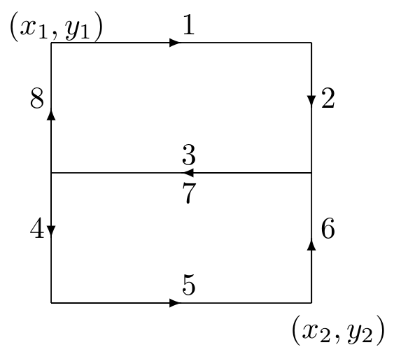

Node Mobility¶
Overview¶
In order to simulate ad-hoc wireless networks, it is important to model the motion of mobile network nodes. Received signal strength, signal interference, and channel occupancy depend on the distances between nodes. The selected mobility models can significantly influence the results of the simulation (e.g. via packet loss rates).
A mobility model describes position and orientation over time in a 3D Euclidean coordinate system. Its main purpose is to provide position, velocity and acceleration, and also angular position, angular velocity, and angular acceleration data as three-dimensional quantities at the current simulation time.
In INET, a mobility model is most often an OMNeT++ simple module implementing the motion as a C++ algorithm. Although most models have a few common parameters (e.g. for initial positioning), they always come with their own set of parameters. Some models support geographic positioning to ease the configuration of map-based scenarios.
Mobility models can be single or group mobility models. Single mobility models describe the motion of entities independent of each other. Group mobility models provide such a motion where group members are dependent on each other.
Mobility models can also be categorized as trace-based, deterministic, stochastic, and combining models.
Using Mobility Models¶
In order for a mobility model to actually have an effect on the motion of a network node, the mobility model needs to be included as a submodule in the compound module of the network node. By default, a transceiver antenna within a network node uses the same mobility model as the node itself, but that is completely optional. For example, it is possible to model a vehicle facing forward while moving on a road that contains multiple transceiver antennas at different relative locations with different orientations.
The Scene¶
Many mobility models allow the user to define a cubic volume that the
node cannot leave. The volume is configured by setting the
constraintAreaX, constraintAreaY, constraintAreaZ,
constraintAreaWidth, constraintAreaHeight, and
constraintAreaDepth parameters.
If the initFromDisplayString parameter is set, the initial position is
taken from the display string. Otherwise, the position can be given in
the initialX, initialY, and initialZ parameters. If
neither of these parameters is given, a random initial position is
chosen within the constraint area.
When the node reaches the boundary of the constraint area, the mobility component has to prevent the node from exiting. Many mobility models offer the following policies:
reflection off the wall
reappearance at the opposite edge (torus area)
placement at a randomly chosen position in the area
stopping the simulation with an error
Built-In Mobility Models¶
List of Mobility Models¶
The following potentially list contains the mobility models available in INET. Nearly all of these models are single mobility models; group mobility can be implemented, for example, by combining other mobility models.
Stationary¶
Stationary models only define position (and orientation), but no motion.
StationaryMobility provides deterministic and random positioning.
StaticGridMobility places several mobility models in a rectangular grid.
StaticConcentricMobility places several models in a set of concentric circles.
Deterministic¶
Deterministic mobility models use non-random mathematical models to describe motion.
LinearMobility moves linearly with a constant speed or constant acceleration.
CircleMobility moves around a circle parallel to the XY plane with constant speed.
RectangleMobility moves around a rectangular area parallel to the XY plane with constant speed.
TractorMobility moves similarly to a tractor on a field with a number of rows.
VehicleMobility moves similarly to a vehicle along a path, especially turning around corners.
TurtleMobility moves according to an XML script written in a simple yet expressive LOGO-like programming language.
FacingMobility orients towards the position of another mobility model.
Trace-Based¶
Trace-based mobility models replay recorded motion as observed in real life.
BonnMotionMobility replays trace files from the BonnMotion scenario generator.
Ns2MotionMobility replays files from the CMU’s scenario generator used in ns2.
AnsimMobility replays XML trace files from the ANSim (Ad-Hoc Network Simulation) tool.
Stochastic¶
Stochastic or random mobility models use mathematical models involving random numbers.
RandomWaypointMobility moves to random destinations with random speed.
GaussMarkovMobility uses one parameter to vary the degree of randomness from linear to Brown motion.
MassMobility moves similarly to a mass with inertia and momentum.
ChiangMobility uses a probabilistic transition matrix to change the motion state.
Combining¶
Combining mobility models are not mobility models per se, but instead, they allow for more complex motions to be formed from simpler ones via superposition and other ways.
SuperpositioningMobility model combines several other mobility models by summing them up. It allows creating group mobility by sharing a mobility model in each group member, separating initial positioning from positioning during the simulation, and separating positioning from orientation.
AttachedMobility models mobility that is attached to another one at a given offset. Position, velocity, and acceleration are all affected by the respective quantities and also the orientation of the referenced mobility.
More Information on Some Mobility Models¶
TractorMobility¶
Moves a tractor through a field with a certain number of rows. The
following figure illustrates the movement of the tractor when the
rowCount parameter is 2. The trajectory follows the segments in
the 1,2,3,4,5,6,7,8,1,2,3... order. The area is configured by the
x1, y1, x2, y2 parameters.
{kind=link}

RandomWaypointMobility¶
In the Random Waypoint mobility model, the nodes move in line segments.
For each line segment, a random destination position (distributed
uniformly over the scene) and a random speed are chosen. You can
define a speed as a variate from which a new value will be drawn for
each line segment; it is customary to specify it as
uniform(minSpeed, maxSpeed). When the node reaches the target
position, it waits for the time waitTime, which can also be
defined as a variate. After this time, the algorithm calculates a new
random position, etc.
GaussMarkovMobility¶
The Gauss-Markov model contains a tuning parameter that controls the randomness in the movement of the node. Let the magnitude and direction of the speed of the node at the \(n\)th time step be \(s_n\) and \(d_n\). The next speed and direction are computed as
where \(\bar{s}\) and \(\bar{d}\) are constants representing the mean value of speed and direction as \(n \to \infty\); and \(s_{x_n}\) and \(d_{x_n}\) are random variables with a Gaussian distribution.
Totally random walk (Brownian motion) is obtained by setting \(\alpha=0\), while \(\alpha=1\) results in linear motion.
To ensure that the node does not remain at the boundary of the constraint area for a long time, the mean value of the direction (\(\bar{d}\)) is modified as the node enters the margin area. For example, at the right edge of the area it is set to 180 degrees, so the new direction is away from the edge.
MassMobility¶
This is a random mobility model for a mobile host with mass. It is the one used in .
“An MH moves within the room according to the following pattern. It moves along a straight line for a certain period of time before it makes a turn. This moving period is a random number, normally distributed with the average of 5 seconds and standard deviation of 0.1 seconds. When it makes a turn, the new direction (angle) in which it will move is a normally distributed random number with an average equal to the previous direction and standard deviation of 30 degrees. Its speed is also a normally distributed random number, with a controlled average, ranging from 0.1 to 0.45 (unit/sec), and standard deviation of 0.01 (unit/sec). A new such random number is picked as its speed when it makes a turn. This pattern of mobility is intended to model node movement during which the nodes have momentum, and thus do not start, stop, or turn abruptly. When it hits a wall, it reflects off the wall at the same angle; in our simulated world, there is little other choice.”
This implementation can be parameterized a bit more, via the
changeInterval, changeAngleBy, and changeSpeedBy
parameters. The parameters described above correspond to the following
settings:
changeInterval = normal(5, 0.1)
changeAngleBy = normal(0, 30)
speed = normal(avgSpeed, 0.01)
ChiangMobility¶
Implements Chiang’s random walk movement model (). In this model, the state of the mobile node in each direction (x and y) can be:
0: the node stays in its current position
1: the node moves forward
2: the node moves backward
The \((i,j)\) element of the state transition matrix determines the probability that the state changes from \(i\) to \(j\):
Replaying Trace Files¶
BonnMotionMobility¶
Uses the native file format of BonnMotion.
The file is a plain text file, where every line describes the motion of one host. A line consists of one or more (t, x, y) triplets of real numbers, like:
t1 x1 y1 t2 x2 y2 t3 x3 y3 t4 x4 y4 ...
The meaning is that the given node gets to \((xk,yk)\) at \(tk\). There’s no separate notation for wait, so x and y coordinates will be repeated there.
Ns2MotionMobility¶
Nodes are moving according to the trace files used in NS2. The trace file has this format:
# '#' starts a comment, ends at the end of line
$node_(<id>) set X_ <x> # sets x coordinate of the node identified by <id>
$node_(<id>) set Y_ <y> # sets y coordinate of the node identified by <id>
$node_(<id>) set Z_ <z> # sets z coordinate (ignored)
$ns at $time "$node_(<id>) setdest <x> <y> <speed>" # at $time start moving
towards <x>,<y> with <speed>
The Ns2MotionMobility module has the following parameters:
traceFilethe Ns2 trace filenodeIdnode identifier in the trace file; -1 gets substituted by the parent module’s indexscrollX,scrollYuser specified translation of the coordinates
ANSimMobility¶
It reads XML trace files from the ANSim Tool. The nodes are moving along linear segments described by an XML trace file conforming to this DTD:
<!ELEMENT mobility (position_change*)>
<!ELEMENT position_change (node_id, start_time, end_time, destination)>
<!ELEMENT node_id (#PCDATA)>
<!ELEMENT start_time (#PCDATA)>
<!ELEMENT end_time (#PCDATA)>
<!ELEMENT destination (xpos, ypos)>
<!ELEMENT xpos (#PCDATA)>
<!ELEMENT ypos (#PCDATA)>
Parameters of the module:
ansimTracethe trace filenodeIdthenode_idof this node, -1 gets substituted by the parent module’s index
Note
The AnsimMobility module processes only the position_change
elements, and it ignores the start_time attribute. It starts the move
on the next segment immediately.
TurtleMobility¶
The TurtleMobility module can be parameterized by a script file
containing LOGO-style movement commands in XML format. The content of
the XML file should conform to the DTD in the
TurtleMobility.dtd file in the source tree.
The file contains movement elements, each describing a
trajectory. The id attribute of the movement element can
be used to refer to the movement from the ini file using the syntax:
**.mobility.turtleScript = xmldoc("turtle.xml", "movements//movement[@id='1']")
The motion of the node is composed of uniform linear segments. The
movement elements may contain the following commands as
elements (names in parens are recognized attribute names):
repeat(n)repeats its content n times, or indefinitely if thenattribute is omitted.set(x,y,speed,angle,borderPolicy)modifies the state of the node.borderPolicycan bereflect,wrap,placerandomly, orerror.forward(d,t)moves the node forttime or to theddistance with the current speed. If bothdandtare given, then the current speed is ignored.turn(angle)increases the angle of the node byangledegrees.moveto(x,y,t)moves to point(x,y)in the given time. If \(t\) is not specified, it is computed from the current speed.moveby(x,y,t)moves by offset(x,y)in the given time. If \(t\) is not specified, it is computed from the current speed.wait(t)waits for the specified amount of time.
Attribute values must be given without physical units, distances are
assumed to be given as meters, time intervals in seconds, and speeds in
meters per seconds. Attributes can contain expressions that are evaluated
each time the command is executed. The limits of the constraint area can
be referenced as $MINX, $MAXX, $MINY, and $MAXY. Random
number distributions generate a new random number when evaluated, so the
script can describe random as well as deterministic scenarios.
To illustrate the usage of the module, we show how some mobility models can be implemented as scripts.
RectangleMobility:
<movement>
<set x="$MINX" y="$MINY" angle="0" speed="10"/>
<repeat>
<repeat n="2">
<forward d="$MAXX-$MINX"/>
<turn angle="90"/>
<forward d="$MAXY-$MINY"/>
<turn angle="90"/>
</repeat>
</repeat>
</movement>
Random Waypoint:
<movement>
<repeat>
<set speed="uniform(20,60)"/>
<moveto x="uniform($MINX,$MAXX)" y="uniform($MINY,$MAXY)"/>
<wait t="uniform(5,10)"/>
</repeat>
</movement>
MassMobility:
<movement>
<repeat>
<set speed="uniform(10,20)"/>
<turn angle="uniform(-30,30)"/>
<forward t="uniform(0.1,1)"/>
</repeat>
</movement>